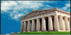

Семь чудес света, Древние чудеса света.

Семь чудес света, Древние чудеса света.Древние чудеса света – великая история. В этом разделе представлены интересные археологические открытия, которые стали местами паломничества миллионов туристов с разных стран. Большинство из нас не могут себе позволить ознакомится воочию с данными интересными местами которые раскиданы по разным уголкам планеты. Вы познакомитесь как с основными чудесами света, которых насчитывают около семи: Египетские пирамиды, Храм Артемиды Ефесской, Геликарнасский мавзолей, Александрийский маяк, Висячие сады Семирамиды, Колосс Родосский и статуей Зевса в Олимпии.
Безусловно это признанные чудеса, но по моему мнению чудес света гораздо больше чем семь, если разглядеть все интересные места и окунуться в их историю создания, то вы сами поймете, что все что строилось до нашей эры заслуживает особого внимания для детального изучения и расширения своего кругозора, и бесспорно любое из этих творений древний архитектуры заслуживает название Чудо света.
Вашему вниманию представлены небольшие обзоры: великие цивилизации, великие народы, необъяснимые явления и сооружения древней эпохи. Мы будем вам благодарны, если вы будете нам присылать интересный материал о чудесах.
- | Александрийский маяк.
- | Архитектура ацтеков.
- | Афинский Акрополь.
- | Борободур.
- | Висячие сады Семирамиды.
- | Голубая мечеть.
- | Горный дворец в Сигирии.
- | Дворец в Пeрсеполе.
- | Долина статуй в Колумбии.
- | Запретный город в Пекине.
- | Киемидзудэра.
- | Китайская стена.
- | Колосс Родосский.
- | Мавзолей в Галикарнасе.
- | Мавзолей Тадж–Махал.
- | Монастыри Метеоры в Греции.
- | Пагода Шведагон.
- | Пещерные города Каппадокии.
- | Пещеры Эллора.
- | Пизанская башня.
- | Римские акведуки.
- | Римский Колизей.
- | Статуя Зевса в Олимпии.
- | Таинственные линии в перуанской пустыне Наска.
- | Теотиуакан.
- | Термы Каракаллы.
- | Терракотовая армия.
- | Тимбукту.
- | Храм Ангкор–Ват.
- | Храм Артемиды в Эфесе.
- | Храм Тодайдзи и Зал Великого Будды.
- | Храмы в Абу Симбеле.|